|
 |
| ТУДЖЕО СолоСтар® (TOUJEO SoloStar®) insulin glargine раствор д/п/к введения | ||||||
|
Клинико-фармакологическая группа: Аналог человеческого инсулина длительного действия Номер и дата регистрации: ЛП-003653 от 30.05.16 Код ATX: A10AE04 |
Владелец регистрационного удостоверения: зарегистрировано Представительство: | |||||
Форма выпуска, состав и упаковка Раствор для п/к введения прозрачный, бесцветный или почти бесцветный.
Вспомогательные вещества: метакрезол (м-крезол) - 2.7 мг, цинка хлорид - 0.19 мг (соответствует 0.9 мг цинка), глицерол (85%) - 20 мг, натрия гидроксид - до pH 4.0, хлористоводородная кислота - до pH 4.0, вода д/и - до 1 мл. 1.5 мл - картриджи из бесцветного стекла (тип I), вмонтированные в одноразовые шприц-ручки СолоСтар® (1) - пачки картонные. | ||||||
| ||||||
Описание препарата основано на официально утвержденной инструкции по применению и утверждено компанией-производителем для издания 2022 г. | ||||||
Фармакологическое действие |
Фармакокинетика |
Показания |
Режим дозирования |
Побочное действие |
Противопоказания |
Беременность и лактация |
Особые указания |
Передозировка |
Лекарственное взаимодействие |
Условия хранения и сроки годности |
Условия реализации
Фармакологическое действие
Наиболее важным действием инсулина, в т.ч. инсулина гларгина, является регуляция метаболизма глюкозы. Инсулин и его аналоги снижают концентрацию глюкозы в крови, стимулируя поглощение глюкозы периферическими тканями (особенно скелетной мускулатурой и жировой тканью) и ингибируя образование глюкозы в печени. Инсулин подавляет липолиз в адипоцитах (жировых клетках) и ингибирует протеолиз, увеличивая при этом синтез белка. Фармакодинамические характеристики Инсулин гларгин является аналогом человеческого инсулина, полученным методом рекомбинации ДНК бактерий вида Escherichia coli (штаммы К12), используемых в качестве штамма-продуцента. Он имеет низкую растворимость в нейтральной среде. При pH 4 (в кислой среде) инсулин гларгин полностью растворим. После введения в подкожно-жировую клетчатку кислая реакция раствора нейтрализуется, что приводит к образованию микропреципитатов, из которых постоянно высвобождаются небольшие количества инсулина гларгина. Начало действия введенного п/к инсулина гларгина 100 ЕД/мл было более медленным, по сравнению с человеческим инсулином изофан, кривая его действия была гладкой и лишенной пиков, продолжительность действия была пролонгированной (данные эугликемических кламп-исследований, проведенных у здоровых добровольцев и пациентов с сахарным диабетом 1 типа). Гипогликемическое действие препарата Туджео СолоСтар® после его п/к введения, по сравнению с таковым при п/к введении инсулина гларгина 100 ЕД/мл, было более постоянным по величине и более пролонгированным (данные 36-часового перекрестного эугликемического кламп-исследования, проведенного у 18 пациентов с сахарным диабетом 1 типа). Действие препарата Туджео СолоСтар® продолжалось более 24 ч (до 36 ч) при п/к введении в клинически значимых дозах. 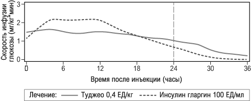 Пролонгированное гипогликемическое действие препарата Туджео СолоСтар®, продолжающееся более 24 ч, позволяет, при необходимости, изменять время введения препарата в пределах 3 ч до или 3 ч после обычного для пациента времени проведения инъекции (см. раздел "Режим дозирования"). Различия в кривых гипогликемического действия препарата Туджео СолоСтар® и инсулина гларгина 100 ЕД/мл связаны с изменением высвобождения инсулина гларгина из преципитата. Для одного и того же количества единиц инсулина гларгина вводимый объем препарата Туджео СолоСтар® составляет одну третью часть от такового при введении инсулина гларгина 100 ЕД/мл. Это приводит к уменьшению площади поверхности преципитата, что обеспечивает более постепенное высвобождение инсулина гларгина из преципитата препарата Туджео СолоСтар®, по сравнению с преципитатом инсулина гларгина 100 ЕД/мл. При в/в введении одинаковых доз инсулина гларгина и человеческого инсулина их гипогликемическое действие было одинаковым. Связь с инсулиновыми рецепторами: инсулин гларгин метаболизируется до двух активных метаболитов M1 и M2 (см. раздел "Фармакокинетика"). Исследования in vitro показали, что аффинность инсулина гларгина и его метаболитов M1 и M2 к рецепторам инсулина человека подобна таковой у человеческого инсулина. Связь с рецепторами инсулиноподобного фактора роста 1 (ИФР-1): аффинность инсулина гларгина к рецептору ИФР-1 приблизительно в 5-8 раз выше, чем у человеческого инсулина (но примерно в 70-80 раз ниже, чем у ИФР-1), в то же время, по сравнению с человеческим инсулином, метаболиты инсулина гларгина M1 и M2 имеют несколько меньшую аффинность к рецептору ИФР-1, по сравнению с человеческим инсулином. Общая терапевтическая концентрация инсулина (концентрация инсулина гларгина и его метаболитов), определяемая у пациентов с сахарным диабетом 1 типа, была заметно ниже концентрации, необходимой для полумаксимального связывания с рецепторами ИФР-1 и последующей активации митогенно-пролиферативного пути, запускаемого через рецепторы ИФР-1. Физиологические концентрации эндогенного ИФР-1 могут активировать митогенно-пролиферативный путь, однако терапевтические концентрации инсулина, определяемые при инсулинотерапии, включая лечение препаратом Туджео СолоСтар®, значительно ниже фармакологических концентраций, необходимых для активации митогенно-пролиферативного пути. Результаты, полученные во всех клинических исследованиях препарата Туджео СолоСтар®, проведенных с участием в общей сложности 546 пациентов с сахарным диабетом 1 типа и 2474 пациентов с сахарным диабетом 2 типа, показали, что снижение значений показателя гликированного гемоглобина (HbA1c), по сравнению с их исходными значениями, к концу исследований было не меньше такового при лечении инсулином гларгином 100 ЕД/мл. Процент пациентов, достигших целевого значения показателя HbA1c (ниже 7%), был сопоставимым в обеих группах лечения. Снижение концентраций глюкозы в плазме крови к концу исследования с препаратом Туджео СолоСтар® и инсулином гларгином 100 ЕД/мл было одинаковым, но при этом при лечении препаратом Туджео СолоСтар® это снижение было более постепенным в период подбора дозы. У пациентов, получавших лечение препаратом Туджео СолоСтар®, к концу 6-месячного периода лечения наблюдалось изменение массы тела, в среднем, менее чем на 1 кг. Улучшение показателя HbА1с не зависело от пола, этнической принадлежности, возраста, продолжительности заболевания сахарным диабетом, значения показателя HbA1c или ИМТ в исходе. У пациентов с сахарным диабетом 2 типа результаты клинических исследований продемонстрировали меньшую частоту развития тяжелой и/или подтвержденной гипогликемии, а также документированной гипогликемии, протекающей с клинической симптоматикой, при лечении препаратом Туджео СолоСтар®, по сравнению с лечением инсулином гларгином 100 ЕД/мл. Преимущество препарата Туджео СолоСтар® перед инсулином гларгином 100 ЕД/мл в отношении снижения риска развития тяжелой и/или подтвержденной ночной гипогликемии было показано у пациентов, ранее получавших пероральные гипогликемические препараты (23% снижение риска) или инсулин во время еды (21% снижение риска) в течение периода от 9-й недели до конца исследования, по сравнению с лечением инсулином гларгином 100 ЕД/мл. В группе пациентов, получавших лечение препаратом Туджео СолоСтар®, по сравнению с пациентами, получавшими лечение инсулином гларгином 100 ЕД/мл, снижение риска развития гипогликемии наблюдалось, как у пациентов, ранее получавших инсулинотерапию, так и у пациентов, ранее не получавших инсулин; снижение риска было больше в течение первых 8 недель лечения (начальный период лечения) и не зависело от возраста, пола, расовой принадлежности, ИМТ и длительности заболевания сахарным диабетом (<10 лет и ≥10 лет). У пациентов с сахарным диабетом 1 типа частота развития гипогликемии на фоне лечения препаратом Туджео СолоСтар® была подобна таковой у пациентов, получавших лечение инсулином гларгином 100 ЕД/мл. Однако частота развития ночной гипогликемии (для всех категорий гипогликемии) во время начального периода лечения была ниже у пациентов, получавших лечение препаратом Туджео СолоСтар®, по сравнению с пациентами, получавшими лечение инсулином гларгином 100 ЕД/мл. В клинических исследованиях однократное в течение суток введение препарата Туджео СолоСтар® вечером, с фиксированным графиком введения (в одно и тоже время) или гибким графиком введения (как минимум, 2 раза в неделю введение препарата проводилось за 3 ч до или через 3 ч после обычного времени введения, в результате чего интервалы между введениями укорачивались до 18 ч и удлинялись до 30 ч) оказывало одинаковое воздействие на показатель HbA1c, концентрацию глюкозы плазмы крови натощак (ГПН) и среднее значение прединъекционной концентрации глюкозы в плазме крови при самоопределении. Кроме того, при применении препарата Туджео СолоСтар® с фиксированным или гибким графиком времени введения не наблюдалось никаких различий в частоте развития гипогликемии в любое время суток или ночной гипогликемии. Результаты исследований по сравнению препарата Туджео СолоСтар® и инсулина гларгина 100 ЕД/мл не показали различий по влиянию процесса образования антител к инсулину на эффективность, безопасность и дозу базального инсулина между пациентами, получавшими лечение препаратами Туджео СолоСтар®, и инсулином гларгином 100 ЕД/мл (см. раздел "Побочное действие"). В международном, многоцентровом, рандомизированном исследовании ORIGIN (Outcome Reduction with Initial Glargine INtervention) с участием 12537 пациентов с нарушенной гликемией натощак (НГН), нарушенной толерантностью к глюкозе (НТГ) или ранней стадией сахарного диабета 2 типа и подтвержденным сердечно-сосудистым заболеванием было показано, что лечение инсулином гларгином 100 ЕД/мл, по сравнению со стандартной гипогликемической терапией, не изменяло риск развития сердечно-сосудистых осложнений (сердечно-сосудистой смерти, нефатального инфаркта миокарда или нефатального инсульта), риск проведения процедуры реваскуляризации (коронарных, сонных или периферических артерий) или риск госпитализации по поводу развития сердечной недостаточности, риск микрососудистых осложнений (комбинированный показатель микрососудистых осложнений: проведение лазерной фотокоагуляции или витрэктомии, потеря зрения в связи с диабетической ретинопатией, прогрессирование альбуминурии, или удвоение показателя концентрации креатинина в крови, или возникновение необходимости проведения диализной терапии). В исследовании по оценке влияния инсулина гларгин 100 ЕД/мл на развитие диабетической ретинопатии при пятилетнем наблюдении за пациентами с сахарным диабетом 2 типа не наблюдалось достоверных различий в прогрессировании диабетической ретинопатии при лечении инсулином гларгином 100 ЕД/мл, по сравнению с инсулином изофан. Особые группы пациентов Половая и расовая принадлежность Не наблюдалось различий в эффективности и безопасности препарата Туджео СолоСтар® и инсулина гларгин 100 ЕД/мл в зависимости от пола и расы пациентов. Пациенты пожилого возраста В контролируемых клинических исследованиях 716 пациентов (23% от популяции для оценки безопасности) с сахарным диабетом 1 и 2 типа были в возрасте ≥ 65 лет и 97 пациентов (3%) были в возрасте ≥ 75 лет. В целом не наблюдалось различий в эффективности и безопасности препарата между этими пациентами и пациентами более молодого возраста. У пациентов пожилого возраста с сахарным диабетом, чтобы избежать гипогликемических реакций, начальная доза и поддерживающая доза должны быть более низкими, а увеличение дозы проводиться медленнее. У пациентов пожилого возраста могут быть трудности с распознаванием гипогликемии. Рекомендуется тщательный мониторинг концентрации глюкозы в крови, и доза инсулина должна корректироваться индивидуально (см. разделы "Фармакокинетика" и "Режим дозирования"). Пациенты с почечной недостаточностью В контролируемых клинических исследованиях подгрупповой анализ, основанный на функциональном состоянии почек (определенном в исходе по скорости клубочковой фильтрации < 60 или ≥ 60 мл/мин/1,73м2 поверхности тела), не показал различий в безопасности и эффективности между препаратом Туджео СолоСтар®и инсулином гларгином 100 ЕД/мл. Рекомендуется тщательный мониторинг концентрации глюкозы в крови, и доза инсулина должна корректироваться индивидуально (см. разделы "Фармакокинетика" и "Режим дозирования"). Пациенты с ожирением В клинических исследованиях подгрупповой анализ на основании ИМТ (до 63 кг/м2) показал отсутствие различий в эффективности и безопасности между препаратом Туджео СолоСтар® и инсулином гларгином 100 ЕД/мл. Пациенты детского возраста Эффективность и безопасность препарата Туджео СолоСтар® были изучены в рандомизированном (1:1) контролируемом клиническом исследовании у детей и подростков с сахарным диабетом 1 типа при лечении в течение 26 недель (n=463). В группу пациентов, получавших препарат Туджео СолоСтар®, входили 73 пациента в возрасте <12 лет и 160 пациентов в возрасте ≥12 лет. При применении препарата Туджео СолоСтар® с режимом дозирования 1 раз в сутки было продемонстрировано сходное снижение уровня HbA1c и ГПН от исходного уровня к неделе 26 по сравнению с инсулином гларгин 100 ЕД/мл. В целом частота возникновения гипогликемии у пациентов в любой категории была сходна в обеих группах терапии: 97,9% пациентов в группе терапии препаратом Туджео СолоСтар® и 98,2% в группе терапии инсулином гларгин 100 ЕД/мл сообщили, по крайней мере, об одном явлении. Сходным образом была сопоставима частота развития гипогликемии в ночное время в группах, получавших препарат Туджео СолоСтар® и инсулин гларгин 100 ЕД/мл. Процент пациентов, сообщивших о тяжелой гипогликемии, был ниже в группе терапии препаратом Туджео СолоСтар® по сравнению с группой терапии инсулином гларгин 100 ЕД/мл (6% и 8.8% соответственно). Доля пациентов с эпизодами гипергликемии, сопровождавшейся кетозом, была ниже в группе препарата Туджео СолоСтар® по сравнению с группой инсулина гларгин 100 ЕД/мл (6.4% и 11.8% соответственно). Для препарата Туджео СолоСтар® не было выявлено каких-либо проблем безопасности в отношении нежелательных явлений и стандартных параметров безопасности. Выработка антител отмечалась в редких случаях и не оказывала клинически выраженного влияния. Данные об эффективности и безопасности для пациентов детского возраста с сахарным диабетом 2 типа были экстраполированы из данных для подростков и взрослых пациентов с сахарным диабетом 1 типа и взрослых пациентов с сахарным диабетом 2 типа. Результаты подтверждают возможность применения препарата Туджео СолоСтар® у детей с сахарным диабетом 2 типа. Фармакокинетика
Всасывание и распределение После п/к инъекции препарата Туджео СолоСтар® здоровым добровольцам и пациентам с сахарным диабетом сывороточная концентрация инсулина указывает на гораздо более медленную и более продолжительную абсорбцию, что приводит к созданию более пологой кривой "концентрация-время" в течение до 36 ч, по сравнению с инсулином гларгином 100 ЕД/мл. Кривая "концентрация-время" препарата Туджео СолоСтар® соответствовала кривой его фармакодинамической активности. Css в пределах терапевтического диапазона концентраций достигалась через 3-4 дня ежедневного применения препарата Туджео СолоСтар®. После п/к инъекции препарата Туджео СолоСтар® вариабельность у одного и того же пациента, определяемая как коэффициент вариации системной экспозиции инсулина в течение 24 ч в равновесном состоянии, была низкой (17.4%). Метаболизм У человека после п/к введения препарата Туджео СолоСтар® инсулин гларгин быстро метаболизируется со стороны карбоксильного конца (С-конца) β-цепи с образованием двух активных метаболитов М1 (21A-Gly-инсулина) и М2 (21А-Gly-des-30В-Thr-инсулина). Преимущественно в плазме крови циркулирует метаболит M1. Системная экспозиция метаболита M1 увеличивается при увеличении дозы препарата Туджео СолоСтар®. Сопоставление данных фармакокинетики и фармакодинамики показали, что действие препарата, в основном, осуществляется за счет системной экспозиции метаболита M1. У подавляющего большинства пациентов не удавалось обнаружить инсулин гларгин и метаболит М2 в системном кровотоке. В случаях, когда все-таки удавалось обнаружить в крови инсулин гларгин и метаболит М2, их концентрации не зависели от введенной дозы и лекарственной формы инсулина гларгина. Выведение Т1/2 метаболита M1, количественно преобладающего метаболита препарата Туджео СолоСтар®, после п/к инъекции препарата составляет 18-19 ч, независимо от дозы. Фармакокинетика у особых групп пациентов Информация о влиянии расы и пола на фармакокинетику инсулина гларгина отсутствует (см. раздел "Фармакологическое действие"). Пациенты пожилого возраста. Влияние возраста на фармакокинетику препарата Туджео СолоСтар® в настоящий момент не изучено. У пациентов пожилого возраста с сахарным диабетом, для того, чтобы избежать гипогликемических реакций, начальная доза и поддерживающая доза должны быть более низкими, а увеличение дозы следует проводить медленнее (см. разделы "Фармакологическое действие" и "Режим дозирования"). Дети. Популяционный фармакокинетический анализ был проведен для препарата Туджео СолоСтар®на основе данных о концентрации его основного метаболита M1 с использованием данных о 75 пациентах детского возраста (от 6 до <18 лет) с сахарным диабетом 1 типа. Масса тела была значимой ковариантной, оказывающей влияние на клиренс препарата Туджео СолоСтар®. После поправки на массу тела величина системного воздействия (AUC) препарата Туджео СолоСтар® в равновесном состоянии не зависела от возраста. Пациенты с почечной и печеночной недостаточностью. Влияние почечной и печеночной недостаточности на фармакокинетику препарата Туджео СолоСтар® в настоящий момент не изучено. Однако в некоторых исследованиях, проведенных с человеческим инсулином, было показано повышение концентраций инсулина у пациентов с почечной и печеночной недостаточностью. Рекомендуется тщательный мониторинг концентрации глюкозы в крови и индивидуальная коррекция дозы инсулина (см. разделы "Режим дозирования" и "Особые указания"). Режим дозирования
Единицы препарата Туджео СолоСтар® (инсулина гларгина 300 ЕД/мл) относятся только к препарату Туджео СолоСтар® и не эквивалентны другим единицам, выражающим силу действия других аналогов инсулина. Препарат Туджео СолоСтар® следует вводить п/к 1 раз/сут в любое время дня, предпочтительно в одно и то же время. Препарат Туджео СолоСтар® при однократном введении в течение суток позволяет иметь гибкий график проведения инъекций: при необходимости пациенты могут проводить инъекцию в течение 3 ч до или 3 ч после обычного для них времени ее проведения. Целевые значения концентрации глюкозы в крови, дозы и время приема/введения гипогликемических препаратов должны определяться и корректироваться индивидуально. Коррекция дозы также может потребоваться, например, при изменении массы тела пациента, его образа жизни, изменении времени введения инсулина или при других состояниях, которые могут увеличить предрасположенность к развитию гипо- или гипергликемии (см. раздел "Особые указания"). Любые изменения дозы инсулина должны проводиться с осторожностью и только под медицинским наблюдением. Препарат Туджео СолоСтар® не является инсулином выбора для лечения диабетического кетоацидоза. В этом случае предпочтение следует отдавать в/в введению инсулина короткого действия. У всех пациентов с сахарным диабетом рекомендуется проводить мониторинг концентрации глюкозы в крови. Начало применения препарата Туджео СолоСтар® Пациенты с сахарным диабетом 1 типа Препарат Туджео СолоСтар® должен применяться 1 раз/сут в сочетании с инсулином, вводимым во время приема пищи, и требует индивидуальной коррекция дозы. Пациенты с сахарным диабетом 2 типа Рекомендованная начальная доза составляет 0.2 ЕД/кг массы тела 1 раз/сут с последующей индивидуальной коррекцией дозы. Переход с введения инсулина гларгина 100 ЕД/мл на препарат Туджео СолоСтар® и, наоборот, с препарата Туджео СолоСтар® на инсулин гларгин 100 ЕД/мл Инсулин гларгин 100 ЕД/мл и препарат Туджео СолоСтар® не эквивалентны по своим фармакокинетическим, фармакодинамическим характеристикам и клиническим эффектам. В связи с этим переход с инсулина гларгина 100 ЕД/мл на препарат Туджео СолоСтар® и наоборот, требует наблюдения врача, проведения тщательного метаболического контроля и индивидуальной коррекции дозы препарата. Переход с инсулина гларгина 100 ЕД/мл на препарат Туджео СолоСтар® может быть проведен из расчета единица на единицу, но для достижения целевого диапазона концентраций глюкозы в плазме крови может потребоваться более высокая доза препарата Туджео СолоСтар®. При переходе с применения препарата Туджео СолоСтар® на инсулин гларгин 100 ЕД/мл для снижения риска развития гипогликемии доза должна быть уменьшена (приблизительно на 20%) с последующей коррекцией дозы при необходимости. Рекомендуется проведение тщательного метаболического мониторинга во время и в течение нескольких первых недель после перехода с одного из этих препаратов на другой. Переход с других базальных инсулинов на препарат Туджео СолоСтар® При переходе со схемы лечения с инсулинами промежуточной и длительной продолжительности действия на схему лечения с препаратом Туджео СолоСтар® может потребоваться изменение дозы базального инсулина и коррекция одновременно проводимой гипогликемической терапии (изменение доз и времени введения инсулинов короткого действия или быстродействующих аналогов инсулина, либо доз неинсулиновых гипогликемических препаратов). Переход с однократного в течение суток введения базальных инсулинов на однократное в течение суток введение препарата Туджео СолоСтар® может проводиться из расчета единица на единицу ранее вводимой дозы базального инсулина. При переходе с двукратного в течение суток введения базальных инсулинов на однократное введение препарата Туджео СолоСтар® рекомендуемая начальная доза препарата Туджео СолоСтар® составляет 80% общей суточной дозы базального инсулина, лечение которым прекращается. Пациенты с высокими дозами инсулина, вследствие наличия у них антител к человеческому инсулину, могут иметь улучшенную реакцию на препарат Туджео СолоСтар®. Во время перехода на препарат Туджео СолоСтар® и в течение нескольких недель после него рекомендуется проведение тщательного метаболического мониторинга. С улучшением метаболического контроля и возникающего в результате этого увеличения чувствительности к инсулину может потребоваться дополнительная коррекция режима дозирования. Коррекция режима дозирования может также потребоваться, например, при изменении массы тела или образа жизни пациента, при изменении времени введения дозы инсулина или при возникновении других состояний, которые повышают предрасположенность к развитию гипо- и гипергликемии. Переход с введения препарата Туджео СолоСтар® на другие базальные инсулины Во время перехода с введения препарата Туджео СолоСтар® на применение других базальных инсулинов и в течение нескольких недель после него рекомендуется медицинское наблюдение и тщательный метаболический мониторинг. Рекомендуется обратиться к инструкции по применению лекарственного препарата, на который переводится пациент. Смешивание и разведение Препарат Туджео СолоСтар® нельзя смешивать с каким-либо другим инсулином. Смешивание приводит к изменению профиля действия препарата Туджео СолоСтар® во времени и вызывает преципитацию. Препарат Туджео СолоСтар® нельзя разводить. Разведение может привести к изменению профиля действия препарата Туджео СолоСтар® во времени. Особые группы пациентов Препарат Туджео СолоСтар® можно применять у детей в возрасте 6 лет и старше. При переходе с базального инсулина на препарат Туджео СолоСтар® снижение дозы базального инсулина и инсулина короткого действия необходимо учитывать в индивидуальном порядке, чтобы минимизировать риск развития гипогликемии. Безопасность и эффективность препарата Туджео СолоСтар® у детей в возрасте до 6 лет не установлены. Препарат Туджео СолоСтар® можно применять у пациентов пожилого возраста. Рекомендуется тщательный мониторинг концентрации глюкозы в крови, дозу инсулина следует подбирать индивидуально. У пациентов пожилого возраста прогрессивное ухудшение функции почек может приводить к постоянному снижению потребности в инсулине (см. разделы "Фармакологическое действие", "Фармакокинетика" и "Особые указания"). Препарат Туджео СолоСтар® можно применять у пациентов с почечной недостаточностью. Рекомендуется тщательный мониторинг концентрации глюкозы в крови, дозу инсулина следует подбирать индивидуально. У пациентов с почечной недостаточностью потребность в инсулине может уменьшаться вследствие замедления метаболизма инсулина (см. разделы "Фармакологическое действие", "Фармакокинетика" и "Особые указания"). Препарат Туджео СолоСтар® можно применять у пациентов с печеночной недостаточностью. Рекомендуется тщательный мониторинг концентрации глюкозы в крови, дозу инсулина следует подбирать индивидуально. У пациентов с печеночной недостаточностью потребность в инсулине может уменьшаться вследствие уменьшения глюконеогенеза и замедления метаболизма инсулина (см. разделы "Фармакологическое действие", "Фармакокинетика" и "Особые указания"). Способ применения Препарат Туджео СолоСтар® вводится в подкожно-жировую клетчатку живота, плеч или бедер. Места инъекций следует чередовать при каждой новой инъекции в пределах рекомендуемых областей для введения препарата для того, чтобы снизить риск развития липодистрофии и локализованного кожного амилоидоза. Не допускается введение препарата в области липодистрофии и локализованного кожного амилоидоза. Препарат Туджео СолоСтар® не предназначен для в/в введения. Пролонгированное действие инсулина гларгина наблюдается только при его введении в подкожно-жировую клетчатку. В/в введение обычной п/к дозы может вызвать тяжелую гипогликемию. Препарат Туджео СолоСтар® не предназначен для введения с помощью инсулиновой инфузионной помпы. Препарат Туджео СолоСтар® является прозрачным раствором, а не суспензией, поэтому ресуспендирования перед применением не требуется. С помощью шприц-ручки Туджео СолоСтар® можно вводить дозы от 1 до 80 единиц на инъекцию с шагом увеличения дозы в 1 единицу. Счетчик доз шприц-ручки Туджео СолоСтар® показывает количество единиц препарата Туджео СолоСтар®, которое будет введено. Шприц-ручка Туджео СолоСтар® была специально разработана для препарата Туджео СолоСтар®, поэтому не требуется никакого дополнительного пересчета доз. Препарат Туджео СолоСтар® никогда не должен извлекаться из картриджа шприц-ручки в шприц (см. разделы "Особые указания"). Нельзя использовать иглы повторно. Перед каждой инъекцией следует присоединять новую стерильную иглу. Повторное использование игл увеличивает риск их закупорки, которая может приводить к введению меньшей дозы или к передозировке. Кроме того, использование новой стерильной иглы для каждой инъекции минимизирует риск ее контаминации и инфицирования. В случае закупорки иглы пациент должен следовать инструкциям, указанным в ШАГе 3 раздела "Инструкции по пользованию шприц-ручкой Туджео СолоСтар®" (см. далее). Во избежание возможной передачи заболеваний, передающихся через кровь, инсулиновые шприц-ручки не должны использоваться более чем одним пациентом, даже при условии замены иглы. Для правильного пользования шприц-ручкой Туджео СолоСтар® см. ниже "Инструкцию по пользованию шприц-ручкой Туджео СолоСтар®". Для того, чтобы исключить возможность ошибочного (случайного) введения другого вида инсулина вместо препарата Туджео СолоСтар® следует всегда перед каждой инъекцией проверять этикетку на шприц-ручке (на этикетке шприц-ручки Туджео СолоСтар® на цветном фоне обозначена концентрация "300 ЕД/мл"). Срок использования препарата в одноразовой шприц-ручке Туджео СолоСтар® после первого применения - 4 недели при хранении в защищенном от света месте. Рекомендуется указывать на этикетке шприц-ручки дату ее первого применения. Инструкция по пользованию шприц-ручкой Туджео СолоСтар® (инсулин гларгин 300 ЕД/мл) Шприц-ручка Туджео СолоСтар® содержит инсулин гларгин в концентрации 300 ЕД/мл. Никогда не следует использовать иглы повторно. При повторном использовании иглы пациент может не получить нужную дозу (введение меньшей дозы) или получить слишком большую дозу (передозировка) в связи с тем, что игла может закупориться. Никогда не использовать шприц для извлечения инсулина из шприц-ручки. В таком случае пациент может получить слишком большую дозу инсулина. Шкала на большинстве инсулиновых шприцев предназначена только для неконцентрированных инсулинов. Важная информация Не следует пользоваться одной шприц-ручкой одновременно с другими людьми, даже при условии замены иглы. Пациент может получить серьезную инфекцию от других людей или передать им серьезную инфекцию, передающуюся через кровь. Никогда не пользоваться шприц-ручкой, если она повреждена или нет уверенности в том, что она исправна. Следует всегда проводить тест на безопасность. Необходимо всегда иметь при себе запасную шприц-ручку и запасные иглы на случай, если они потеряются или станут неисправными. Перед использованием шприц-ручки пациент должен уточнить у медицинского работника, как правильно проводить п/к инъекцию. В случае наличия у пациента проблем со зрением может потребоваться помощь других лиц, способных следовать всем рекомендациям данной инструкции по пользованию шприц-ручкой Туджео СолоСтар®. Перед использованием шприц-ручки необходимо прочитать всю инструкцию. Если не следовать всем рекомендациям, можно получить слишком много или слишком мало инсулина. Дополнительно потребуются: новая стерильная игла (см. Шаг 2), смоченная спиртом салфетка, резистентный к проколам контейнер для использованных игл и шприцев. Указание мест для проведения инъекций 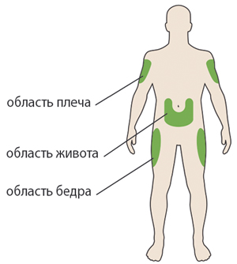 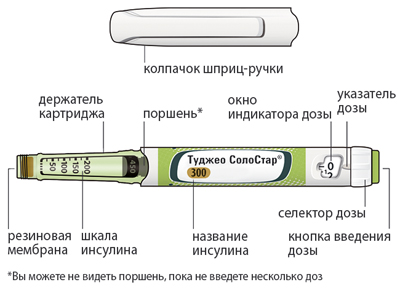 ШАГ 1: Проверка шприц-ручки Вынуть новую шприц-ручку из холодильника, как минимум, за 1 ч до проведения инъекции. Введение холодного инсулина является более болезненным. А. Проверить название инсулина и срок годности на этикетке шприц-ручки. Необходимо удостовериться в том, в Вашей шприц-ручке нужный Вам инсулин. 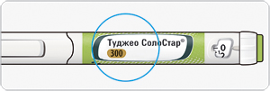 Никогда не использовать шприц-ручку после истечения срока годности. В. Снять колпачок с шприц-ручки. С. Проверить прозрачность инсулина. Не следует использовать шприц-ручку, если инсулин мутный, имеет окраску или содержит инородные частицы. 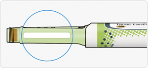 D. Протереть резиновую мембрану с помощью смоченной этиловым спиртом салфетки. 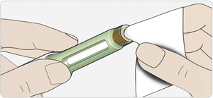 Если имеются другие шприц-ручки, особенно важно удостоверится в том, что выбран правильный (нужный Вам) препарат. ШАГ 2: Присоединение новой иглы Всегда следует использовать новую стерильную иглу для каждой инъекции. Это поможет предотвратить закупорку иглы, контаминацию и инфекцию. Необходимо всегда использовать иглы, совместимые со шприц-ручкой СолоСтар®, например, BD Микро-Файн® Плюс (BD Micro-Fine® Plus). A. Взять новую иглу и удалить защитное покрытие. 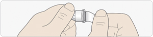 B. Удерживая иглу прямо перед шприц-ручкой, прикрутить ее на шприц-ручку до упора. Не следует применять чрезмерных усилий при прикручивании иглы. 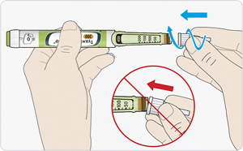 C. Снять наружный колпачок иглы. Необходимо сохранить его для использования в дальнейшем. 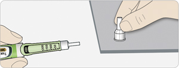 D. Снять внутренний колпачок с иглы и выбросить его. 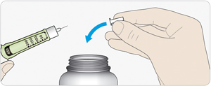 Обращение с иглами. Необходимо соблюдать осторожность при обращении с иглами - это предотвратит повреждение игл и перекрестное инфицирование. ШАГ 3: Проведение теста на безопасность Обязательно перед каждой инъекцией проводить тест на безопасность для проверки правильности работы шприц-ручки и исключения непроходимости иглы, а также для того, чтобы быть уверенным, что будет введена правильная доза инсулина. A. Набрать 3 ЕД, вращая селектор дозы до тех пор, пока указатель дозы не окажется между цифрами 2 и 4. 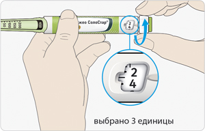 B. Нажать до упора на кнопку введения дозы. Если капля инсулина появляется на кончике иглы, это говорит о том, что шприц-ручка работает правильно. 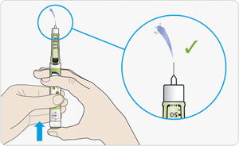 Если инсулин не показывается на кончике иглы:
Возможно появление пузырьков воздуха в инсулине. Это нормально, они не причинят вреда. ШАГ 4: Набор дозы Никогда не следует набирать дозу и нажимать на кнопку введения дозы без присоединенной иглы. Это может повредить шприц-ручку. A. Необходимо удостовериться в том, что игла присоединена и доза установлена на "0". 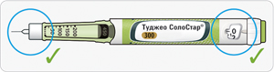 B. Вращать селектор дозы до тех пор, пока указатель дозы не окажется на одной линии с нужной дозой.
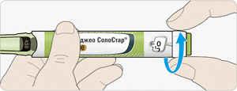 Как читать показания окна индикатора дозы:
Единицы инсулина в шприц-ручке
ШАГ 5: Введение дозы Если возникают затруднения при нажатии на кнопку введения дозы, не следует применять силу, т.к. это может повредить шприц-ручку. См. раздел ниже, где описываются необходимые действия в этой ситуации. A. Выбрать место для инъекции, как показано на рисунке выше. B. Ввести иглу в кожу, как было показано медицинским работником. Не следует прикасаться к кнопке введения дозы. 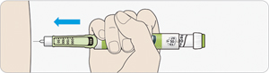 C. Поместить большой палец на кнопку введения дозы. Затем нажать до упора и удерживать в этом положении. Не нажимать на кнопку под углом - большой палец может блокировать проворачивание селектора дозы. 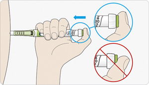 D. Продолжать нажимать на кнопку введения дозы, и, когда в окне дозы появится "0", медленно досчитать до пяти. Это будет гарантировать введение полной дозы. 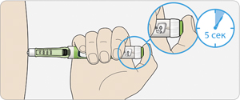 E. После удерживания кнопки введения дозы и счета до пяти отпустить кнопку введения дозы. Затем извлечь иглу из кожи. Если возникают затруднения при нажатии на кнопку введения дозы: следует сменить иглу (см. ШАГ 6 и ШАГ 2), затем провести тест на безопасность (см. ШАГ 3). Если все равно сохраняются затруднения при нажатии на кнопку введения дозы, следует взять новую шприц-ручку. ШАГ 6: Удаление иглы Следует соблюдать осторожность при обращении с иглами - это предотвратит повреждение иглы и перекрестную инфекцию. Никогда не следует снова надевать на иглу внутренний колпачок иглы. A. Взять широкий конец наружного колпачка иглы двумя пальцами. Удерживая иглу прямо, ввести ее в наружный колпачок иглы. Затем плотно прижать колпачок. Если игла вводится в колпачок под углом, она может его проткнуть. B. Крепко обхватить широкую часть наружного колпачка иглы. Провернуть шприц-ручку несколько раз другой рукой, чтобы снять иглу. Если не удалось снять иглу с первого раза, следует повторить попытку. 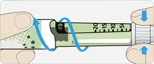 C. Выбросить использованную иглу в плотный (устойчивый к проколам) контейнер, который следует тщательно закрывать, а после заполнения утилизировать согласно указаниям медицинского работника. 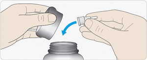 D. Закрыть шприц-ручку ее колпачком. Не следует помещать шприц-ручку в холодильник. Срок использования Следует использовать шприц-ручку в течение 4 недель после первого применения. Хранение шприц-ручки Перед первым использованием:
После первого использования:
Обращение со шприц-ручкой Туджео СолоСтар® Следует с осторожностью обращаться со шприц-ручкой:
Предохранять шприц-ручку от попадания пыли и грязи:
Утилизация шприц-ручки:
Побочное действие
Указанные ниже нежелательные реакции наблюдались во время клинических исследований, проведенных с препаратом Туджео СолоСтар® и во время клинического применения инсулина гларгина 100 ЕД/мл. Эти нежелательные реакции представлены по системам органов (в соответствии с классификацией MedDRA) в соответствии с рекомендованными ВОЗ следующими градациями частоты возникновения: очень часто (≥10%); часто (≥1%; <10%); нечасто (≥0.1%; <1%); редко (≥0.01%; <0.1%); очень редко (<0.01%), частота неизвестна (определить частоту встречаемости нежелательных реакций по имеющимся данным не представляется возможным). Со стороны обмена веществ Гипогликемия - наиболее часто встречающаяся нежелательная реакция при инсулинотерапии, может возникнуть, если доза инсулина оказывается слишком высокой, по сравнению с потребностью в нем. Как и при применении других инсулинов, эпизоды тяжелой гипогликемии, особенно повторяющиеся, могут приводить к неврологическим нарушениям. Эпизоды длительной и выраженной гипогликемии могут угрожать жизни пациентов. У многих пациентов признакам и симптомам нейрогликопении (чувство усталости, неадекватная утомляемость или слабость, снижение способности к концентрации внимания, сонливость, зрительные расстройства, головная боль, тошнота, спутанность сознания или его потеря, судорожный синдром) предшествуют признаки адренергической контррегуляции (активации симпатоадреналовой системы в ответ на гипогликемию): чувство голода, раздражительность, нервное возбуждение или тремор, беспокойство, бледность кожных покровов, "холодный" пот, тахикардия, выраженное сердцебиение. Обычно, чем быстрее развивается гипогликемия, и чем она тяжелее, тем сильнее выражены симптомы адренергической контррегуляции. Со стороны органа зрения Значительное улучшение гликемического контроля может вызвать временное ухудшение зрения вследствие временного нарушения тургора и коэффициента преломления хрусталика глаза. Длительное улучшение гликемического контроля снижает риск прогрессирования диабетической ретинопатии. Однако, как и при любых схемах назначения инсулина, интенсификация инсулиновой терапии с резким улучшением гликемического контроля может ассоциироваться с временным утяжелением течения диабетической ретинопатии. У пациентов с пролиферативной ретинопатией, особенно не получающих лечения фотокоагуляцией, эпизоды тяжелой гипогликемии могут приводить к преходящей потере зрения. Со стороны кожи и подкожных тканей Как и при лечении любыми другими препаратами инсулина, в месте инъекций может развиваться липодистрофия, способная замедлить всасывание инсулина. В клинических исследованиях инсулина гларгина часто наблюдалась липогипертрофия (1-2% пациентов), нечасто - липоатрофия. При применении инсулина отмечались случаи развития локализованного кожного амилоидоза. Имеются сообщения о развитии гипергликемии при повторных инъекциях в область кожного амилоидоза. При внезапном изменении места инъекции на неповрежденный участок сообщалось о развитии гипогликемии. Постоянная смена мест инъекций в пределах областей тела, рекомендуемых для п/к введения инсулина, может способствовать уменьшению выраженности этой реакции или предотвратить ее развитие. Со стороны костно-мышечной системы Очень редко - миалгия. Общие расстройства и нарушения в месте введения Аллергические реакции в месте введения: как при любой инсулинотерапии, такие реакции включают покраснение кожи, боль, зуд, крапивницу, сыпь, отек и воспаление. В клинических исследованиях, проводимых с препаратом Туджео СолоСтар® у взрослых пациентов, частота всех реакций в месте введения у пациентов, получавших лечение препаратом Туджео СолоСтар® (2.5%), была подобна таковой у пациентов, получавших лечение инсулином гларгином 100 ЕД/мл (2.8%). Большинство незначительных реакций в месте введения инсулинов обычно проходит в течение нескольких дней или нескольких недель. Со стороны иммунной системы Системные аллергические реакции: аллергические реакции немедленного типа на инсулин развиваются редко. Такие реакции на инсулин (включая инсулин гларгин) или вспомогательные вещества могут, например, сопровождаться генерализованными кожными реакциями, ангионевротическим отеком (отеком Квинке), бронхоспазмом, снижением АД и шоком и представлять угрозу для жизни пациента. Со стороны нервной системы Очень редко - дисгевзия. Другие реакции Применение инсулина может вызывать образование антител к нему. В клинических исследованиях по сравнению препарата Туджео СолоСтар® и инсулина гларгина 100 ЕД/мл образование антител к инсулину в обеих группах лечения наблюдалось с одинаковой частотой. Как и при применении других инсулинов, в редких случаях наличие таких антител к инсулину может потребовать изменения дозы инсулина с целью устранения тенденции к развитию гипогликемии или гипергликемии. В редких случаях инсулин может вызвать задержку натрия и возникновение отеков, в особенности при улучшении ранее недостаточного метаболического контроля при интенсификации инсулинотерапии. Дети Безопасность и эффективность препарата Туджео СолоСтар® были продемонстрированы в исследовании у пациентов детского возраста от 6 до 18 лет. Отсутствуют указания на отличие частоты, типа и степени тяжести нежелательных реакций у пациентов детского возраста от таковых в общей популяции пациентов с сахарным диабетом. Противопоказания
С осторожностью У беременных женщин (возможность изменения потребности в инсулине в течение беременности и после родов); пациентов пожилого возраста (см. разделы "Фармакологическое действие", "Фармакокинетика", "Режим дозирования" и "Особые указания"); пациентов с некомпенсированными эндокринными нарушениями (такими как гипотиреоз, недостаточность аденогипофиза и коры надпочечников); при заболеваниях, сопровождающихся рвотой или диареей; при выраженном стенозе коронарных артерий или сосудов головного мозга; при пролиферативной ретинопатии (особенно если пациентам не проводилось фотокоагуляции); при почечной недостаточности; при тяжелой печеночной недостаточности (см. раздел "Особые указания"). Применение при беременности и кормлении грудью
Пациентки с сахарным диабетом должны информировать лечащего врача о настоящей или планируемой беременности. Не проводилось рандомизированных контролируемых клинических исследований по применению препарата Туджео СолоСтар® у беременных женщин. Большое количество наблюдений (более 1000 исходов беременностей при ретроспективном и проспективном наблюдении) при постмаркетинговом применении инсулина гларгина 100 ЕД/мл показали отсутствие у него каких-либо специфических эффектов на течение и исход беременности, состояние плода или здоровье новорожденного. Кроме того, с целью оценки безопасности применения инсулина гларгина и инсулина изофана у беременных женщин с ранее имевшимся или гестационным сахарным диабетом, был проведен мета-анализ восьми наблюдательных клинических исследований, включавший женщин, у которых во время беременности применялся инсулин гларгин 100 ЕД/мл (n=331) и инсулин изофан (n=371). Этот мета-анализ не выявил существенных различий, касающихся безопасности в отношении здоровья матерей или новорожденных, при применении инсулина гларгина и инсулина изофана во время беременности. В исследованиях на животных не было получено прямых или косвенных данных об эмбриотоксическом или фетотоксическом действии инсулина гларгина 100 ЕД/мл при его применении в дозах, в 6-40 раз превышающих рекомендованные дозы у человека. Для пациенток с ранее имевшимся или гестационным сахарным диабетом важно в течение всей беременности поддерживать адекватную регуляцию метаболических процессов, чтобы предупредить появление нежелательных исходов, связанных с гипергликемией. В случае необходимости может быть рассмотрен вопрос о применении препарата Туджео СолоСтар® при беременности. Потребность в инсулине может снижаться в I триместре беременности и, в целом, увеличиваться в течение II и III триместров. Непосредственно после родов потребность в инсулине быстро уменьшается (возрастает риск развития гипогликемии). В этих условиях существенное значение имеет тщательный контроль концентрации глюкозы в крови. Пациенткам в период грудного вскармливания может потребоваться коррекция режима дозирования инсулина и диеты. Особые указания
Пациенты должны обладать навыками самоконтроля сахарного диабета, включая мониторинг концентрации глюкозы в крови, а также придерживаться правильной техники проведения п/к инъекций и уметь купировать гипогликемию и гипергликемию. Инсулинотерапия требует постоянной настороженности в отношении возможности развития гипергликемии или гипогликемии. В случае недостаточного контроля концентрации глюкозы в крови, а также при наличии тенденции к развитию гипо- или гипергликемии, прежде чем приступать к коррекции режима дозирования следует проверить точность выполнения предписанной схемы лечения, соблюдение указаний в отношении мест введения препарата, правильность техники проведения п/к инъекций и обращения с шприц-ручкой СолоСтар®, а также учитывать возможность всех других факторов, способных вызывать такое состояние. Пациенты должны быть проинструктированы о необходимости постоянной смены места инъекции для снижения риска развития липодистрофии и локализованного кожного амилоидоза. Существует возможный риск замедленного всасывания инсулина и ухудшения гликемического контроля после инъекций инсулина в местах с данными реакциями. Сообщалось, что внезапное изменение места инъекции на неповрежденную область приводит к гипогликемии. После смены места инъекции рекомендуется мониторинг концентрации глюкозы в крови, также можно рассмотреть возможность корректировки дозы гипогликемических препаратов. Гипогликемия Время развития гипогликемии зависит от профиля действия используемых инсулинов и может, таким образом, изменяться при изменении схемы лечения. Следует соблюдать особую осторожность и проводить тщательный мониторинг концентрации глюкозы в крови при применении препарата у пациентов, у которых эпизоды гипогликемии могут иметь особое клиническое значение, таких как пациенты с выраженным стенозом коронарных артерий или сосудов головного мозга (риск развития кардиальных и церебральных осложнений гипогликемии), а также пациентам с пролиферативной ретинопатией, особенно, если они не получали лечения фотокоагуляцией (риск преходящей потери зрения вслед за гипогликемией). Как и при применении любых инсулинов, при некоторых состояниях симптомы-предвестники гипогликемии могут изменяться, становиться менее выраженными или отсутствовать. К ним относятся:
Такие ситуации могут приводить к развитию тяжелой гипогликемии (с возможной потерей сознания) до того, как пациент осознает, что у него развивается гипогликемия. Следует принимать во внимание то, что пролонгированное действие препарата Туджео СолоСтар® при его п/к введении может отсрочить выход пациента из состояния гипогликемии. В случае если отмечаются нормальные или сниженные показатели гликозилированного гемоглобина, необходимо учитывать возможность развития повторяющихся нераспознанных эпизодов гипогликемии (особенно в ночное время). Соблюдение пациентами схемы дозирования и режима питания, правильное введение инсулина и знание симптомов-предвестников гипогликемии способствуют существенному снижению риска развития гипогликемии. Факторы, повышающие склонность к гипогликемии, при наличии которых требуется особенно тщательное наблюдение и может быть необходима коррекция дозы инсулина:
У пациентов с почечной недостаточностью потребность в инсулине может уменьшаться за счет замедления метаболизма инсулина (см. разделы "Фармакологическое действие", "Фармакокинетика", "Режим дозирования"). У пациентов пожилого возраста прогрессирующее ухудшение функции почек может привести к устойчивому снижению потребности в инсулине (см. разделы "Фармакологическое действие", "Фармакокинетика", "Режим дозирования"). У пациентов с тяжелой печеночной недостаточностью потребность в инсулине может быть уменьшена из-за снижения способности к глюконеогенезу и замедления метаболизма инсулина (см. разделы "Фармакологическое действие", "Фармакокинетика", "Режим дозирования"). Гипогликемия, в целом, может быть устранена немедленным приемом быстроусваиваемых углеводов. Поскольку начальные действия по коррекции гипогликемии должны проводиться немедленно, пациентам следует всегда иметь с собой, как минимум, 20 г быстроусваиваемых углеводов. Интеркуррентные заболевания При интеркуррентных заболеваниях требуется более интенсивный контроль концентрации глюкозы в крови. Во многих случаях показано проведение анализа на наличие кетоновых тел в моче, также часто требуется коррекция режима дозирования инсулина. При возникновении интеркуррентного заболевания потребность в инсулине часто повышается. Пациенты с сахарным диабетом 1 типа должны продолжать получать углеводы на регулярной основе, даже если они способны употреблять пищу лишь небольшими порциями или вообще не принимают пищу, или в случае развития рвоты; пациенты с сахарным диабетом 1 типа никогда не должны полностью пропускать введение инсулина. Комбинация инсулина гларгина с пиоглитазоном При применении пиоглитазона в комбинации инсулином сообщалось о случаях развития сердечной недостаточности, особенно у пациентов с риском развития сердечной недостаточности. Эту информацию следует принимать во внимание при рассмотрении вопроса о применении комбинации пиоглитазона с препаратом Туджео СолоСтар®. При применении такой комбинации пациенты должны наблюдаться на предмет появления признаков и симптомов сердечной недостаточности, таких как увеличение массы тела, появление отеков. При появлении или утяжелении кардиальных симптомов применение пиоглитазона следует прекратить. Предотвращение ошибок при введении препаратов инсулина Чтобы не перепутать препарат Туджео СолоСтар® с другими инсулинами, необходимо всегда проверять маркировку на шприц-ручке перед каждой инъекцией. Сообщалось о случаях, когда случайно ошибочно вводились другие инсулины, в частности, инсулины короткого действия, вместо длительно действующих инсулинов. Чтобы избежать ошибок дозирования и возможной передозировки, пациенты никогда не должны использовать шприц для извлечения препарата Туджео из шприца-ручки СолоСтар® (см. разделы "Режим дозирования", "Передозировка"). Как и при применении других инсулиновых шприц-ручек, пациенты должны визуально проверять количество набранных единиц дозы в окне индикатора дозы на шприц-ручке. Слепые или слабовидящие пациенты должны получать помощь от других лиц с хорошим зрением и умеющих пользоваться шприц-ручкой Туджео СолоСтар®. Влияние на способность к управлению транспортными средствами и механизмами Способность пациентов к концентрации внимания и быстрота психомоторных реакций могут быть нарушены, например, в результате развития гипогликемии или гипергликемии, а также в результате нарушения зрения. Это может представлять риск в ситуациях, когда указанные способности особенно важны (например, управление автомобилем или работа с другими механизмами). Пациентам рекомендуется соблюдать меры предосторожности во избежание развития гипогликемии во время управления транспортными средствами. Это особенно важно для тех из них, у кого слабо выражены или отсутствуют симптомы, являющиеся предвестниками развивающейся гипогликемии, или для пациентов с часто возникающими эпизодами гипогликемии. Эти особенности пациента следует учитывать при решении вопроса о возможности управления им транспортными средствами. Передозировка
Симптомы: передозировка инсулина (избыток инсулина относительно потребления пищи, энергозатрат или того и другого вместе) может приводить к тяжелой и иногда длительной и угрожающей жизни больного гипогликемии. Лечение: эпизоды гипогликемии средней тяжести обычно купируются путем приема внутрь быстроусваиваемых углеводов. Может возникнуть необходимость изменения схемы дозирования препарата, режима питания или физической активности. Эпизоды более тяжелой гипогликемии, проявляющиеся комой, судорогами или неврологическими расстройствами, могут быть купированы в/м или п/к введением глюкагона или в/в введением концентрированного раствора декстрозы (глюкозы). Может потребоваться длительный прием углеводов и наблюдение специалиста, т.к. после видимого клинического улучшения возможен рецидив гипогликемии. Лекарственное взаимодействие
Ряд лекарственных средств влияет на метаболизм глюкозы, вследствие чего при их одновременном применении с инсулинами может потребоваться коррекция дозы инсулина и особенно тщательное наблюдение. Лекарственные средства, которые могут увеличить гипогликемическое действие инсулина и склонность к развитию гипогликемии Пероральные гипогликемические средства, ингибиторы АПФ, салицилаты, дизопирамид; фибраты, флуоксетин, ингибиторы MAO, пентоксифиллин, пропоксифен, сульфаниламидные антибиотики. Одновременный прием этих лекарственных средств с инсулином гларгином может потребовать коррекции дозы инсулина. Лекарственные средства, которые могут ослабить гипогликемическое действие инсулина ГКС, даназол, диазоксид, диуретики, симпатомиметики (такие как адреналин, сальбутамол, тербуталин); глюкагон, изониазид, производные фенотиазина, соматотропный гормон, гормоны щитовидной железы, эстрогены и гестагены (например, в гормональных контрацептивах), ингибиторы протеаз и атипичные нейролептики (например, оланзапин и клозапин). Одновременный прием этих лекарственных средств с инсулином гларгином может потребовать коррекции дозы инсулина. Бета-адреноблокаторы, клонидин, соли лития и этанол - возможно как усиление, так и ослабление гипогликемического действия инсулина. Пентамидин при сочетании с инсулином может вызывать гипогликемию, которая иногда сменяется гипергликемией. Симпатолитические лекарственные средства - под влиянием симпатолитических средств, таких как бета-адреноблокаторы, клонидин, гуанетидин и резерпин, могут уменьшаться или отсутствовать признаки адренергической контррегуляции (активации симпатической нервной системы в ответ на развитие гипогликемии). Взаимодействие с пиоглитазоном При применении пиоглитазона в комбинации с инсулином сообщалось о случаях развития сердечной недостаточности, особенно у пациентов с риском развития сердечной недостаточности (см. раздел "Особые указания"). При появлении или утяжелении кардиальных симптомов применение пиоглитазона следует прекратить. Условия хранения и сроки годности
Препарат следует хранить в недоступном для детей, защищенном от света месте при температуре от 2° до 8°С. Не замораживать. Срок годности - 2.5 года. Не применять по истечении срока годности. Рекомендации по хранению шприц-ручки Туджео СолоСтар® При хранении препарата Туджео СолоСтар® в холодильнике (невскрытые/до начала использования) необходимо следить за тем, чтобы упаковки шприц-ручек непосредственно не соприкасались с морозильным отсеком или замороженными продуктами, т.к. препарат нельзя замораживать. Если инсулин был заморожен, его использовать нельзя, а шприц-ручку следует утилизировать. Используемые шприц-ручки СолоСтар® следует хранить при температуре не выше 30°C, в защищенном от воздействия света и тепла месте. Препарат в одноразовой шприц-ручке Туджео СолоСтар® после первого применения хранить 4 недели, в защищенном от света месте. Рекомендуется указывать на этикетке шприц-ручки дату ее первого применения. |
||||||
Вернуться наверх |
||||||

Copyright © Справочник Видаль «Лекарственные препараты в России», Москва, Россия